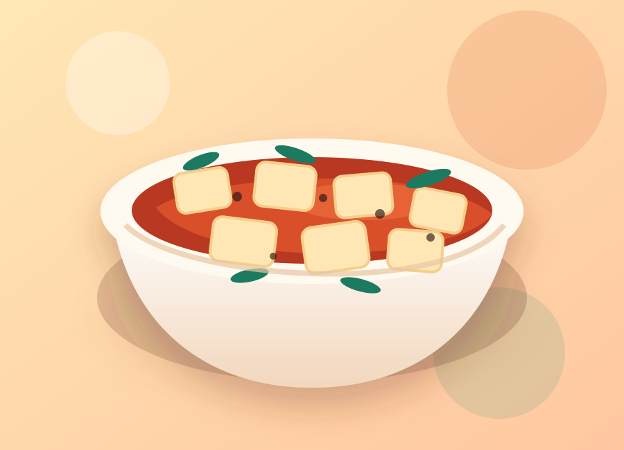

Sichuan comfort
Mapo Tofu
Mapo tofu is a spicy, glossy tofu dish built around chili bean paste, aromatics, and a savory sauce. The goal is contrast: soft tofu, rich sauce, fragrant heat, and a clean finish from scallions.
Time35 min
Serves2–3
LevelMedium
HeatHigh

Steps
- Bring a small pot of salted water to a gentle simmer. Add the tofu cubes for 1 minute, then drain carefully.
- Heat oil in a wok or skillet. Cook the ground meat until browned and slightly crisp.
- Add doubanjiang, black beans, garlic, and ginger. Stir-fry until the oil turns red and fragrant.
- Pour in stock, soy sauce, and sugar. Bring the sauce to a steady simmer.
- Add tofu and simmer for 5 minutes so the tofu absorbs the sauce.
- Stir in the cornstarch slurry in two additions until the sauce turns glossy and lightly thickened.
- Finish with scallions and ground Sichuan peppercorns. Serve hot with rice.